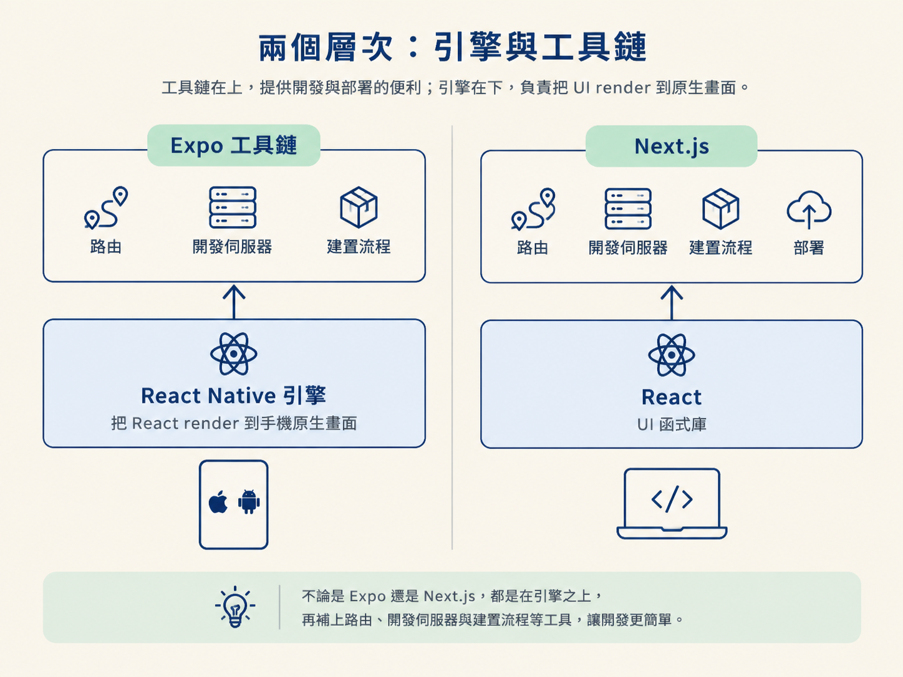

完成這一節後，你應該能分辨 React Native 與 Expo 各自負責什麼，也能說明 Expo SDK、CLI、Expo Router 與 EAS 分別位在開發流程的哪個位置。
上一節已經把 React Native 的原理拆開了：React 的邏輯維持不變，只是 render 的終點從網頁換成手機上的原生畫面。
但理解原理，還不等於能立刻把專案跑起來。如果只使用 React Native，你還得自己處理 iOS 與 Android 兩套原生專案設定、原生模組安裝、字型與圖示資產，以及最後的打包與上架。對只想先做出產品的人來說，這些基礎工程很容易變成一道高牆。
Expo 就是那個幫你把牆拆掉的角色。很多人會把 Expo 和 React Native 當成同一件事，但它們其實處在不同層次：React Native 是引擎，Expo 是圍繞這顆引擎打造的一整條工具鏈。
這一節會把這條工具鏈拆開來看。之後你再遇到 Expo 的文件、套件或指令，就能知道它們位在整個開發流程的哪一格，而不會只把 Expo 當成一個可以掃 QR code 的工具。
React Native 負責的是核心工作：把 React 接到手機的原生畫面上。Expo 則建立在 React Native 之上，提供一組開箱即用的工具與服務，讓你不必從零開始處理各種原生專案細節。
課程對 Expo 的定位很直接：對在 2026 年開始製作手機 app 的人來說，這是其中一種很順手的方式。你可以免費開始；等到真的要把 app 上架到 App Store 或 Play Store，才會遇到需要付月費的服務。
如果你熟悉 Next.js，可以用它來做對照。React 像是 UI 函式庫，Next.js 則在上面補上路由、build、開發伺服器與部署等功能。Expo 和 React Native 的關係有點類似：它在 React Native 這顆引擎上，再提供路由、開發伺服器與建置流程。

不過兩者最後要交付的東西不同。Next.js 通常產出的是執行在伺服器與瀏覽器上的網站；Expo 最後要產出的是能安裝到手機上的 app binary。所以 Expo 還要處理更貼近原生環境的建置工作。
把 Expo 拆開來看，可以分成幾個負責不同階段的部分：
| 部分 | 它在做什麼 | 出現在流程的哪裡 |
|---|---|---|
Expo CLI 與 create-expo-app | 用一行指令產生專案骨架，並啟動開發伺服器 | 專案一開始 |
| Expo SDK | 提供一組彼此相容、會隨 SDK 版本更新的套件 | 開發每個功能時 |
| Expo Router | 提供檔案式路由，用檔案結構決定畫面 | 畫面與導覽 |
| EAS（Expo Application Services） | 提供雲端建置與上架相關服務 | 要產出真機版本或送審時 |
最早碰到的通常是 CLI。課程的起手式，是從官方文件複製 create-expo-app 指令，在空資料夾裡產生專案，接著執行 expo start，在模擬器中把它打開。
這個指令後面通常會指定一個 SDK 版本。課程錄影當下使用的是 SDK 57，但版本會隨時間更新。所以不用記住特定數字，建立專案時去查一下當下的官方文件，確認目前建議的版本就好。
接下來每天都會碰到的是 SDK。SDK 不是單一函式庫，而是一整組由 Expo 維護、彼此保持相容的套件，例如相機、檔案與 native tabs 等功能。
當你需要加入某項功能時，通常會使用 Expo 建議的安裝方式，讓它挑選與目前 SDK 相容的版本。這就像買同一套工具的替換零件：不用自己在不同尺寸之間猜測，降低版本互相打架的機會。
Expo Router 是這條工具鏈中最像 Next.js 的部分。它採用檔案式路由：你在 app 目錄下放一個檔案，那個檔案就會對應成一個畫面；放入一個 _layout.tsx，它就會成為該層共用的外框。
後面的 Step 5 會拿一個真實的 layout 檔案，帶你讀懂這種結構是如何組織畫面與導覽的。
最後是 EAS。當你要把 app 安裝到自己的 iPhone，或送往 TestFlight 與 App Store 時，就會使用 EAS 進行雲端建置。這是工具鏈比較後端、也比較接近交付產品的部分；目前先記得它位在整條流程的末端即可。
安裝 Expo 並執行 expo start 後，你會看到 Expo Go。掃描 QR code，就能直接在手機上看到畫面。這個體驗太順暢，很容易讓人誤以為「Expo 就是 Expo Go」。
其實，Expo Go 只是整條工具鏈中的一個練習用工具。它是一個通用容器，預先放入幾組固定的原生能力，讓你不用先建置專屬 app，就能測試純 JavaScript 的畫面。
但如果你的 app 使用了 Expo Go 沒有內建的原生模組，這個通用容器就不夠用了。這時你必須產出一個屬於自己 app 的版本。
這就是新手最常跌倒的分岔路：一開始用 Expo Go 開發很快，做到一半才發現功能超出它的能力，才被迫重新處理建置。下一節會把這個問題單獨拿出來，當成一個決策來討論。
React Native 是引擎，Expo 是包住它的整條工具鏈：CLI 與 create-expo-app 負責產生與啟動專案，SDK 提供一組相容的套件，Expo Router 提供檔案式路由，EAS 負責雲端建置與上架。Expo Go 只是其中一個練習用的容器，不代表 Expo 的全部。
現在你可以把 Expo 想成一條從「建立專案」一路通往「建置與上架」的路。工具鏈介紹完，下一節要處理其中最容易卡住的岔路：什麼時候可以繼續使用 Expo Go，什麼時候則必須做出 development build。
這個判斷如果太晚做，常常得付出額外的代價：做到一半才發現整個開發方向要重新來過，那可不只是多花幾分鐘的事。